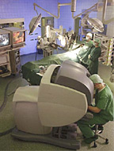
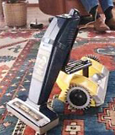
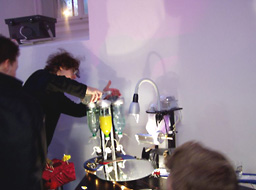

Mit dem "Da Vinci Chirurgie-System", der kalifornischen Firma "Intuitive Surgical", können Ärzte Patienten operieren, indem sie an einem Computer sitzend, einen Roboter steuern, ähnlich einem Videospiel. Die amerikanische Firma "Probotics" produziert den Roboter "Cye", der verschiedene Haushaltsarbeiten verrichten kann. Seit 1999 gibt es die ROBÖXOTICA, eine jährliche Veranstaltung für Cocktailrobotik, die von den Wiener Künstlergruppen SHIFZ und monochrom veranstaltet wird. Vorreiter der Cocktail-Robotik waren Gastronomen u. Künstler, wie z.B. "Cynthias Cyberbar" in London, wo die Roboter-Bardame "Cynthia" 75 Cocktails mixen kann. Sony bringt den Robo-Hund "Aibo" auf den Markt, der nach 20 Minuten ausverkauft ist. Papepro: An dem Partner Personal Robot (PaPeRo) arbeiten NEC-Ingenieure seit 1997. 1999 präsentierten sie den Prototyp R100. PaPeRo wurde weiter entwickelt. Er bekam einen Berührungssensor, so dass er auf Streicheln oder Tätscheln u. Hochheben reagiert. Der 38 Zentimeter hohe PaPeRo erkennt Familien-Mitglieder, versteht 650 Wörter, spricht ca. 3000 Wörter u. ist drahtlos mit dem Internet verbunden.